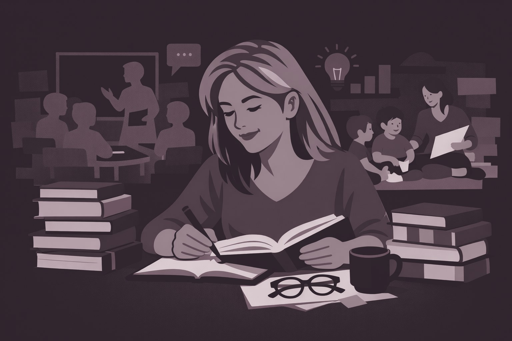

Forskning og utvikling
Fra doktorgradsarbeidet om digital danning i barnehagen til pågående arbeid med kunstig intelligens i elevenes læringsprosesser.

Fem prosjektspor jeg arbeider i nå.
Oppdrag fra Utdanningsdirektoratet, jeg leder arbeidspakke 4
Digitalisering, læring og vurdering i skolen. Jeg leder arbeidspakken om læring og vurdering i fag på 5.–13. trinn, i norsk, matematikk, engelsk og samfunnsfag.
Forskningslinje, tilknyttet AI-Learn
Kunstig intelligens i elevenes læringsprosesser, i undervisningsdesign og i vurderingspraksiser.
Finansiert av Norges forskningsråd, 2023–2027
Skolelederes egen læring i arbeidet med lærernes digitale kompetanse. Seks skoler i Orkland kommune, 2023 til 2027.
Følgeforskning på DigSkole
PfDK, elevenes læringsstrategier og sammenhengen mellom formelle og uformelle læringssituasjoner.
Konsortium
Samarbeid om forskningsnære utviklingsprosesser og kunnskapsbasert innovasjon.
Avsluttede prosjekter, nyeste først.
2020, kvalitetssikret
Analyser av styringsdokumenter og faglige diskurser.
2017, kvalitetssikret
Multidisiplinært arbeid med visuelle uttrykk og læringsprosesser.
2017
Om visualisering, meningsskaping og forskningsarbeid.
2014, doktorgradsarbeid
Prosjektstruktur, delstudier og dokumentasjon fra avhandlingen.
2014
Digital fortelling i førskolelærerutdanningen.
2009, kvalitetssikret
Samspill mellom visuelle og verbale uttrykksformer i læringsarbeid.
2001
Studie av kreativ problemløsning i pedagogisk kontekst.
Internasjonalt, jeg ledet den norske delen
Barns digitale hverdagsliv, undersøkt på tvers av land.
Internasjonalt, jeg ledet NTNU-delen
Lek, teknologi og danning i et internasjonalt samarbeid.
Jeg skriver om forskning, undervisning og digital teknologi i pedagogisk praksis.